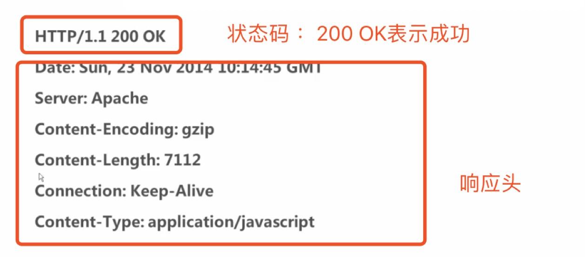

<!DOCTYPE html>
<html>
<head><meta name="generator" content="Hexo 3.8.0">
  <meta charset="utf-8">
  
  <title>http请求 | guowj</title>
  <meta name="viewport" content="width=device-width, initial-scale=1, maximum-scale=1">
  
  <meta name="keywords" content="http">
  
  
  
  
  <meta name="description" content="&amp;nbsp;&amp;nbsp;&amp;nbsp;&amp;nbsp;&amp;nbsp;&amp;nbsp;本篇文章将从记录下 http 请求相关的一些内容。">
<meta name="keywords" content="http">
<meta property="og:type" content="article">
<meta property="og:title" content="http请求">
<meta property="og:url" content="https://gwjacqueline.github.io/http请求/index.html">
<meta property="og:site_name" content="guowj">
<meta property="og:description" content="&amp;nbsp;&amp;nbsp;&amp;nbsp;&amp;nbsp;&amp;nbsp;&amp;nbsp;本篇文章将从记录下 http 请求相关的一些内容。">
<meta property="og:locale" content="zh-CN">
<meta property="og:image" content="https://gwjacqueline.github.io/images/http.jpg">
<meta property="og:image" content="https://gwjacqueline.github.io/images/http2.jpg">
<meta property="og:updated_time" content="2019-04-20T11:07:25.000Z">
<meta name="twitter:card" content="summary">
<meta name="twitter:title" content="http请求">
<meta name="twitter:description" content="&amp;nbsp;&amp;nbsp;&amp;nbsp;&amp;nbsp;&amp;nbsp;&amp;nbsp;本篇文章将从记录下 http 请求相关的一些内容。">
<meta name="twitter:image" content="https://gwjacqueline.github.io/images/http.jpg">
  
    <link rel="alternate" href="/atom.xml" title="guowj" type="application/atom+xml">
  

  

  <link rel="icon" href="/css/images/mylogo.png">
  <link rel="apple-touch-icon" href="/css/images/mylogo.png">
  
    <link href="//fonts.googleapis.com/css?family=Source+Code+Pro" rel="stylesheet" type="text/css">
  
  <link href="https://fonts.googleapis.com/css?family=Open+Sans|Montserrat:700" rel="stylesheet" type="text/css">
  <link href="https://fonts.googleapis.com/css?family=Roboto:400,300,300italic,400italic" rel="stylesheet" type="text/css">
  <link href="//netdna.bootstrapcdn.com/font-awesome/4.0.3/css/font-awesome.css" rel="stylesheet">
  <style type="text/css">
    @font-face{font-family:futura-pt; src:url("../css/fonts/FuturaPTBold.otf") format("woff");font-weight:500;font-style:normal;}
    @font-face{font-family:futura-pt-light; src:url("../css/fonts/FuturaPTBook.otf") format("woff");font-weight:lighter;font-style:normal;}
    @font-face{font-family:futura-pt-italic; src:url("../css/fonts/FuturaPTBookOblique.otf") format("woff");font-weight:400;font-style:italic;}
}

  </style>
  <link rel="stylesheet" href="/css/style.css">

  <script src="/js/jquery-3.1.1.min.js"></script>
  <script src="/js/bootstrap.js"></script>

  <!-- Bootstrap core CSS -->
  <link rel="stylesheet" href="/css/bootstrap.css">

  
    <link rel="stylesheet" href="/css/dialog.css">
  

  

  
    <link rel="stylesheet" href="/css/header-post.css">
  

  
  
  
    <link rel="stylesheet" href="/css/vdonate.css">
  

</head>
</html>


  <body data-spy="scroll" data-target="#toc" data-offset="50">


  
  <div id="container">
    <div id="wrap">
      
        <header>

    <div id="allheader" class="navbar navbar-default navbar-static-top" role="navigation">
        <div class="navbar-inner">
          
          <div class="container"> 
            <button type="button" class="navbar-toggle" data-toggle="collapse" data-target=".navbar-collapse">
              <span class="sr-only">Toggle navigation</span>
              <span class="icon-bar"></span>
              <span class="icon-bar"></span>
              <span class="icon-bar"></span>
            </button>

            
              <a class="brand" style="
                 margin-top: 0px;" href="#" data-toggle="modal" data-target="#myModal">
                  
              </a>
            
            
            <div class="navbar-collapse collapse">
              <ul class="hnav navbar-nav">
                
                  <li> <a class="main-nav-link" href="/">首页</a> </li>
                
                  <li> <a class="main-nav-link" href="/archives">归档</a> </li>
                
                  <li> <a class="main-nav-link" href="/categories">分类</a> </li>
                
                  <li> <a class="main-nav-link" href="/tags">标签</a> </li>
                
                  <li> <a class="main-nav-link" href="/about">关于</a> </li>
                
                  <li><div id="search-form-wrap">

    <form class="search-form">
        <input type="text" class="ins-search-input search-form-input" placeholder>
        <button type="submit" class="search-form-submit"></button>
    </form>
    <div class="ins-search">
    <div class="ins-search-mask"></div>
    <div class="ins-search-container">
        <div class="ins-input-wrapper">
            <input type="text" class="ins-search-input" placeholder="请输入关键词...">
            <span class="ins-close ins-selectable"><i class="fa fa-times-circle"></i></span>
        </div>
        <div class="ins-section-wrapper">
            <div class="ins-section-container"></div>
        </div>
    </div>
</div>
<script>
(function (window) {
    var INSIGHT_CONFIG = {
        TRANSLATION: {
            POSTS: '文章',
            PAGES: '页面',
            CATEGORIES: '分类',
            TAGS: '标签',
            UNTITLED: '(无标题)',
        },
        ROOT_URL: '/',
        CONTENT_URL: '/content.json',
    };
    window.INSIGHT_CONFIG = INSIGHT_CONFIG;
})(window);
</script>
<script src="/js/insight.js"></script>

</div></li>
            </ul></div>
          </div>
                
      </div>
    </div>

</header>


      
            
      <div id="content" class="outer">
        
          <section id="main" style="float:none;"><article id="post-http请求" style="width: 75%; float:left;" class="article article-type-post" itemscope itemprop="blogPost">
  <div id="articleInner" class="article-inner">
    
    
      <header class="article-header">
        
  
    <h1 class="thumb" itemprop="name">
      http请求
    </h1>
  

      </header>
    
    <div class="article-meta">
      
	<a href="/http请求/" class="article-date">
	  <time datetime="2019-03-30T09:24:53.000Z" itemprop="datePublished">2019-03-30</time>
	</a>

      
    <a class="article-category-link" href="/categories/js/">-js</a>

      
	<a class="article-views">
	<span id="busuanzi_container_page_pv">
		阅读量<span id="busuanzi_value_page_pv"></span>
	</span>
	</a>

      

    </div>
    <div class="article-entry" itemprop="articleBody">
      
        <blockquote>
<p>&nbsp;&nbsp;&nbsp;&nbsp;&nbsp;&nbsp;本篇文章将从记录下 http 请求相关的一些内容。</p>
</blockquote>
<a id="more"></a>
<h2 id="HTTP"><a href="#HTTP" class="headerlink" title="HTTP"></a>HTTP</h2><p>&nbsp;&nbsp;&nbsp;&nbsp;&nbsp;&nbsp;http 是计算机通过网络进行通信的规则。http 是一种无状态的连接，也就是说 http 不建立持久的连接，服务器端不保留连接的相关信息。比如：web 像服务器发送请求，服务器响应请求后，连接就被关闭了，处理的过程是没有记忆的，如果后续的处理要之前的一些传递信息，就要重新发送请求。</p>
<h2 id="HTTP-的完整请求过程"><a href="#HTTP-的完整请求过程" class="headerlink" title="HTTP 的完整请求过程"></a>HTTP 的完整请求过程</h2><p>&nbsp;&nbsp;&nbsp;&nbsp;&nbsp;&nbsp;一个完整的 HTTP 请求，通常有 7 个步骤。</p>
<h3 id="1-建立-TCP-连接"><a href="#1-建立-TCP-连接" class="headerlink" title="1.建立 TCP 连接"></a>1.建立 TCP 连接</h3><p>&nbsp;&nbsp;&nbsp;&nbsp;&nbsp;&nbsp;就是上计算机网络的时候，老师经常挂在嘴上的三次握手，三次握手。第一次 🤝：主机向服务器发送建议连接的请求，第二次 🤝：服务器收到请求之后发送同意连接的信号，第三次 🤝：主机收到同意连接的信号后，向服务器发送确认信号。这个过程就采用了 TCP 连接。若其中一方没有收到确认的信号，TCP 协议就会要求再次发送信号。</p>
<h3 id="2-WEB-浏览器向-WEB-服务器发送请求命令"><a href="#2-WEB-浏览器向-WEB-服务器发送请求命令" class="headerlink" title="2.WEB 浏览器向 WEB 服务器发送请求命令"></a>2.WEB 浏览器向 WEB 服务器发送请求命令</h3><p>&nbsp;&nbsp;&nbsp;&nbsp;&nbsp;&nbsp;一旦建立了 TCP 连接，Web 浏览器就会向 Web 服务器发送请求命令</p>
<h3 id="3-WEB-浏览器发送请求头信息"><a href="#3-WEB-浏览器发送请求头信息" class="headerlink" title="3.WEB 浏览器发送请求头信息"></a>3.WEB 浏览器发送请求头信息</h3><p>&nbsp;&nbsp;&nbsp;&nbsp;&nbsp;&nbsp;Web 浏览器向 Web 服务器发送请求命令之后，需要将一些请求头、请求行和请求正文等头信息发送给服务器。接着浏览器再发送空白行来通知服务器，它结束了头信息的发送。</p>
<h3 id="4-WEB-服务器应答"><a href="#4-WEB-服务器应答" class="headerlink" title="4.WEB 服务器应答"></a>4.WEB 服务器应答</h3><p>&nbsp;&nbsp;&nbsp;&nbsp;&nbsp;&nbsp;Web 浏览器向服务器发出请求后，服务器会发出类似：”我收到了“的信号。</p>
<h3 id="5-WEB-服务器发送应答头信息"><a href="#5-WEB-服务器发送应答头信息" class="headerlink" title="5.WEB 服务器发送应答头信息"></a>5.WEB 服务器发送应答头信息</h3><p>&nbsp;&nbsp;&nbsp;&nbsp;&nbsp;&nbsp;以 ”Content-Type“ 应答头信息的格式发送用户所请求的实际数据</p>
<h3 id="6-WEB-服务器关闭-TCP-连接"><a href="#6-WEB-服务器关闭-TCP-连接" class="headerlink" title="6.WEB 服务器关闭 TCP 连接"></a>6.WEB 服务器关闭 TCP 连接</h3><p>&nbsp;&nbsp;&nbsp;&nbsp;&nbsp;&nbsp; 如果浏览器或者服务器没有在头信息中加入”Connection:keep-alive“(TCP 连接在发送后将仍然保持打开状态,浏览器可以继续通过相同的连接发送请求。目的是为了节省每个请求建立新连接所需的时间，从而节约带宽)。一旦 Web 服务器向浏览器发送了请求数据，就会关闭 TCP 连接。</p>
<h2 id="HTTP-请求组成"><a href="#HTTP-请求组成" class="headerlink" title="HTTP 请求组成"></a>HTTP 请求组成</h2><blockquote>
<p>1.HTTP 请求的方法或动作：比如是 GET 请求还是 POST 请求<br>2.正在请求的 URL，我们总是要知道请求的地址是啥把<br>3.请求头，包含了一些客户端环境信息，身份验证信息等等<br>4.请求体，也就是请求正文，请求正文中可以包含客户提交的查询字符串信息，表单信息等等</p>
</blockquote>
<p><strong>注意：请求头和请求体中有个空行表示：请求头已经结束了，接下来是请求体</strong><br>接下来我们来看看一个标准的 http 请求</p>
<div align="center"><br>  <br></div>

<h2 id="GET-和-POST-的区别"><a href="#GET-和-POST-的区别" class="headerlink" title="GET 和 POST 的区别"></a>GET 和 POST 的区别</h2><h3 id="GET"><a href="#GET" class="headerlink" title="GET"></a>GET</h3><p>&nbsp;&nbsp;&nbsp;&nbsp;&nbsp;&nbsp;get 是默认的 http 请求方法，get 请求一般是安全的，用于获取信息，而不是修改信息。换句话说，get 请求一般是用来查询，我们的查询不会影响数据本身。一般不用 get 请求来新建和修改操作。get 请求发送的信息对任何人都是可见的。因为所有的变量名和值都显示在 url 当中。也就是说 get 请求是用 url 来传递参数的。就因为如此，get 请求对发送的信息是有数量限制的。虽然变量是明文的，对任何人都可见，但是也有好处，就是把页面添加在书签里就可以使用。说了这么多，我们来总结下 get 把。</p>
<blockquote>
<p>1.一般用于信息的获取<br> 2.使用 url 来传递参数<br> 3.对发送的信息有数量限制，一般在 2000 个字符</p>
</blockquote>
<h3 id="POST"><a href="#POST" class="headerlink" title="POST"></a>POST</h3><p>&nbsp;&nbsp;&nbsp;&nbsp;&nbsp;&nbsp;相对于 get 请求，post 请求就安全很多。从字面理解，posy 是向服务器发送一些信息，一般用于修改服务器上的资源。posy 一般用于从表单发送一些数据，这些数据并不在 url 里显示，对其他人是不可见的。所有的名称和值都会被嵌入 http 的请求体中。它对发送信息的数量没有限制。用简短的语句归纳下 post 吧。</p>
<blockquote>
<p>1.一般用于修改服务器上的资源<br>2.对所发送的信息无数量限制</p>
</blockquote>
<h2 id="HTTP-响应组成"><a href="#HTTP-响应组成" class="headerlink" title="HTTP 响应组成"></a>HTTP 响应组成</h2><blockquote>
<p>1.一个数字和文字组成的状态码，用来显示请求成功还是请求失败<br>2.响应头，响应头和请求头一样，包含很多有用的信息。例如服务器的类型、日期时间、内容类型和长度等等。<br>3.响应体，也就是响应正文。例如从服务器传过来的字符串、代码等等。</p>
</blockquote>
<p>接下来我们来看看一个标准的 http 响应</p>
<div align="center"><br>  <br></div>

<h2 id="HTTP-状态码"><a href="#HTTP-状态码" class="headerlink" title="HTTP 状态码"></a>HTTP 状态码</h2><p>&nbsp;&nbsp;&nbsp;&nbsp;&nbsp;&nbsp;状态码的好处就是：有助于外部程序调试的效率和准确性。HTTP 状态码由 3 位数字构成，其中首位数字定义了状态码的类型。</p>
<blockquote>
<p><strong>1XX</strong>：信息类，表示收到 WEB 浏览器的请求，正在进一步的处理中<br><strong>2XX</strong>：成功，表示用户请求被正确接收，理解和处理。例如：200 OK<br><strong>3XX</strong>：重定向，表示请求没有成功，用户必须采取进一步的动作<br><strong>4XX</strong>：客户端错误，表示客户端提交的请求有错误。最常见的就是：404 NOT FOUND，代表客户端请求地址不存在。<br><strong>5XX</strong>：服务器错误，表示服务器不能完成对 HTTP 请求的处理。最经常出现的就是 500 错误，出现这个错误，大家都很头疼。</p>
</blockquote>

      
    </div>
    <footer class="article-footer">
      
        <div id="donation_div"></div>

<script src="/js/vdonate.js"></script>
<script>
var a = new Donate({
  title: '如果觉得我的文章对您有用，请随意打赏。您的支持将鼓励我继续创作!', // 可选参数，打赏标题
  btnText: '打赏支持', // 可选参数，打赏按钮文字
  el: document.getElementById('donation_div'),
  wechatImage: '../images/wx.jpeg',
  alipayImage: '../images/zfb.jpg'
});
</script>
      
      
      <div>
        <ul class="post-copyright">
          <li class="post-copyright-author">
          <strong>本文作者:  </strong>guowj
          </li>
          <li class="post-copyright-link">
          <strong>本文链接:  </strong>
          <a href="/http请求/" target="_blank" title="http请求">https://gwjacqueline.github.io/http请求/</a>
          </li>
          <li class="post-copyright-license">
            <strong>版权声明:   </strong>
            本博客所有文章除特别声明外，均采用 <a rel="license" href="https://creativecommons.org/licenses/by-nc-nd/4.0/" target="_blank" title="Attribution-NonCommercial-NoDerivatives 4.0 International (CC BY-NC-ND 4.0)">CC BY-NC-ND 4.0</a>
            许可协议。转载请注明出处
          </li>
         
        </ul>
<div>
</div></div>
      
      
        
	<div id="comment">
		<!-- 来必力City版安装代码 -->
		<div id="lv-container" data-id="city" data-uid="MTAyMC80MzU1OS8yMDA5OA==" ">
		<script type="text/javascript">
		   (function(d, s) {
		       var j, e = d.getElementsByTagName(s)[0];

		       if (typeof LivereTower === 'function') { return; }

		       j = d.createElement(s);
		       j.src = 'https://cdn-city.livere.com/js/embed.dist.js';
		       j.async = true;

		       e.parentNode.insertBefore(j, e);
		   })(document, 'script');
		</script>
		<noscript>为正常使用来必力评论功能请激活JavaScript</noscript>
		</div>
		<!-- City版安装代码已完成 -->
	</div>


      
      
        
  <ul class="article-tag-list"><li class="article-tag-list-item"><a class="article-tag-list-link" href="/tags/http/">http</a></li></ul>

      

    </footer>
  </div>
  
    
<nav id="article-nav">
  
    <a href="/移动端常见兼容性问题/" id="article-nav-newer" class="article-nav-link-wrap">
      <strong class="article-nav-caption">上一篇</strong>
      <div class="article-nav-title">
        
          移动端常见兼容性问题
        
      </div>
    </a>
  
  
</nav>

  
</article>

<!-- Table of Contents -->

  <aside id="toc-sidebar">
    <div id="toc" class="toc-article">
    <strong class="toc-title">文章目录</strong>
    
        <ol class="nav"><li class="nav-item nav-level-2"><a class="nav-link" href="#HTTP"><span class="nav-number">1.</span> <span class="nav-text">HTTP</span></a></li><li class="nav-item nav-level-2"><a class="nav-link" href="#HTTP-的完整请求过程"><span class="nav-number">2.</span> <span class="nav-text">HTTP 的完整请求过程</span></a><ol class="nav-child"><li class="nav-item nav-level-3"><a class="nav-link" href="#1-建立-TCP-连接"><span class="nav-number">2.1.</span> <span class="nav-text">1.建立 TCP 连接</span></a></li><li class="nav-item nav-level-3"><a class="nav-link" href="#2-WEB-浏览器向-WEB-服务器发送请求命令"><span class="nav-number">2.2.</span> <span class="nav-text">2.WEB 浏览器向 WEB 服务器发送请求命令</span></a></li><li class="nav-item nav-level-3"><a class="nav-link" href="#3-WEB-浏览器发送请求头信息"><span class="nav-number">2.3.</span> <span class="nav-text">3.WEB 浏览器发送请求头信息</span></a></li><li class="nav-item nav-level-3"><a class="nav-link" href="#4-WEB-服务器应答"><span class="nav-number">2.4.</span> <span class="nav-text">4.WEB 服务器应答</span></a></li><li class="nav-item nav-level-3"><a class="nav-link" href="#5-WEB-服务器发送应答头信息"><span class="nav-number">2.5.</span> <span class="nav-text">5.WEB 服务器发送应答头信息</span></a></li><li class="nav-item nav-level-3"><a class="nav-link" href="#6-WEB-服务器关闭-TCP-连接"><span class="nav-number">2.6.</span> <span class="nav-text">6.WEB 服务器关闭 TCP 连接</span></a></li></ol></li><li class="nav-item nav-level-2"><a class="nav-link" href="#HTTP-请求组成"><span class="nav-number">3.</span> <span class="nav-text">HTTP 请求组成</span></a></li><li class="nav-item nav-level-2"><a class="nav-link" href="#GET-和-POST-的区别"><span class="nav-number">4.</span> <span class="nav-text">GET 和 POST 的区别</span></a><ol class="nav-child"><li class="nav-item nav-level-3"><a class="nav-link" href="#GET"><span class="nav-number">4.1.</span> <span class="nav-text">GET</span></a></li><li class="nav-item nav-level-3"><a class="nav-link" href="#POST"><span class="nav-number">4.2.</span> <span class="nav-text">POST</span></a></li></ol></li><li class="nav-item nav-level-2"><a class="nav-link" href="#HTTP-响应组成"><span class="nav-number">5.</span> <span class="nav-text">HTTP 响应组成</span></a></li><li class="nav-item nav-level-2"><a class="nav-link" href="#HTTP-状态码"><span class="nav-number">6.</span> <span class="nav-text">HTTP 状态码</span></a></li></ol>
    
    </div>
  </aside>

</section>
        
      </div>
      
      <footer id="footer">
  

  <div class="container">
      	<div class="row">
	      <!--<p> Powered by <a href="http://hexo.io/" target="_blank">Hexo</a> and <a href="https://github.com/iTimeTraveler/hexo-theme-hiker" target="_blank">Hexo-theme-hiker</a> </p>-->
	      <p id="copyRightEn">Copyright &copy;2019 guowj All Rights Reserved.</p>
	      
	      
    		<p class="busuanzi_uv">
				访客数 : <span id="busuanzi_value_site_uv"></span> |  
				访问量 : <span id="busuanzi_value_site_pv"></span>
		    </p>
  		   
		</div>

		
  </div>
</footer>


<!-- min height -->

<script>
    var wrapdiv = document.getElementById("wrap");
    var contentdiv = document.getElementById("content");
    var allheader = document.getElementById("allheader");

    wrapdiv.style.minHeight = document.body.offsetHeight + "px";
    if (allheader != null) {
      contentdiv.style.minHeight = document.body.offsetHeight - allheader.offsetHeight - document.getElementById("footer").offsetHeight + "px";
    } else {
      contentdiv.style.minHeight = document.body.offsetHeight - document.getElementById("footer").offsetHeight + "px";
    }
</script>
    </div>
    <!-- <nav id="mobile-nav">
  
    <a href="/" class="mobile-nav-link">Home</a>
  
    <a href="/archives" class="mobile-nav-link">Archives</a>
  
    <a href="/categories" class="mobile-nav-link">Categories</a>
  
    <a href="/tags" class="mobile-nav-link">Tags</a>
  
    <a href="/about" class="mobile-nav-link">About</a>
  
</nav> -->
    

<!-- mathjax config similar to math.stackexchange -->

<script type="text/x-mathjax-config">
  MathJax.Hub.Config({
    tex2jax: {
      inlineMath: [ ['$','$'], ["\\(","\\)"] ],
      processEscapes: true
    }
  });
</script>

<script type="text/x-mathjax-config">
    MathJax.Hub.Config({
      tex2jax: {
        skipTags: ['script', 'noscript', 'style', 'textarea', 'pre', 'code']
      }
    });
</script>

<script type="text/x-mathjax-config">
    MathJax.Hub.Queue(function() {
        var all = MathJax.Hub.getAllJax(), i;
        for(i=0; i < all.length; i += 1) {
            all[i].SourceElement().parentNode.className += ' has-jax';
        }
    });
</script>

<script type="text/javascript" src="https://cdnjs.cloudflare.com/ajax/libs/mathjax/2.7.1/MathJax.js?config=TeX-AMS-MML_HTMLorMML">
</script>


  <link rel="stylesheet" href="/fancybox/jquery.fancybox.css">
  <script src="/fancybox/jquery.fancybox.pack.js"></script>


<script src="/js/scripts.js"></script>


  <script src="/js/dialog.js"></script>


	<div style="display: none;">
    <script src="https://s95.cnzz.com/z_stat.php?id=1260716016&web_id=1260716016" language="JavaScript"></script>
  </div>


	<script async src="//busuanzi.ibruce.info/busuanzi/2.3/busuanzi.pure.mini.js">
	</script>


  </div>

  <div class="modal fade" id="myModal" tabindex="-1" role="dialog" aria-labelledby="myModalLabel" aria-hidden="true" style="display: none;">
  <div class="modal-dialog">
    <div class="modal-content">
      <div class="modal-header">
        <h2 class="modal-title" id="myModalLabel">设置</h2>
      </div>
      <hr style="margin-top:0px; margin-bottom:0px; width:80%; border-top: 3px solid #000;">
      <hr style="margin-top:2px; margin-bottom:0px; width:80%; border-top: 1px solid #000;">


      <div class="modal-body">
          <div style="margin:6px;">
            <a data-toggle="collapse" data-parent="#accordion" href="#collapseOne" onclick="javascript:setFontSize();" aria-expanded="true" aria-controls="collapseOne">
              正文字号大小
            </a>
          </div>
          <div id="collapseOne" class="panel-collapse collapse" role="tabpanel" aria-labelledby="headingOne">
          <div class="panel-body">
            您已调整页面字体大小
          </div>
        </div>
      


          <div style="margin:6px;">
            <a data-toggle="collapse" data-parent="#accordion" href="#collapseTwo" onclick="javascript:setBackground();" aria-expanded="true" aria-controls="collapseTwo">
              夜间护眼模式
            </a>
        </div>
          <div id="collapseTwo" class="panel-collapse collapse" role="tabpanel" aria-labelledby="headingTwo">
          <div class="panel-body">
            夜间模式已经开启，再次单击按钮即可关闭 
          </div>
        </div>

        <div>
            <a data-toggle="collapse" data-parent="#accordion" href="#collapseThree" aria-expanded="true" aria-controls="collapseThree">&nbsp;&nbsp;&nbsp;&nbsp;&nbsp;&nbsp;关 于&nbsp;&nbsp;&nbsp;&nbsp;&nbsp;&nbsp;</a>
        </div>
         <div id="collapseThree" class="panel-collapse collapse" role="tabpanel" aria-labelledby="headingThree">
          <div class="panel-body">
            guowj
          </div>
          <div class="panel-body">
            Copyright © 2019 guowj All Rights Reserved.
          </div>
        </div>
      </div>


      <hr style="margin-top:0px; margin-bottom:0px; width:80%; border-top: 1px solid #000;">
      <hr style="margin-top:2px; margin-bottom:0px; width:80%; border-top: 3px solid #000;">
      <div class="modal-footer">
        <button type="button" class="close" data-dismiss="modal" aria-label="Close"><span aria-hidden="true">×</span></button>
      </div>
    </div>
  </div>
</div>
  
  <a id="rocket" href="#top" class=""></a>
  <script type="text/javascript" src="/js/totop.js?v=1.0.0" async=""></script>
  
    <a id="menu-switch"><i class="fa fa-bars fa-lg"></i></a>
  
</body>
</html>